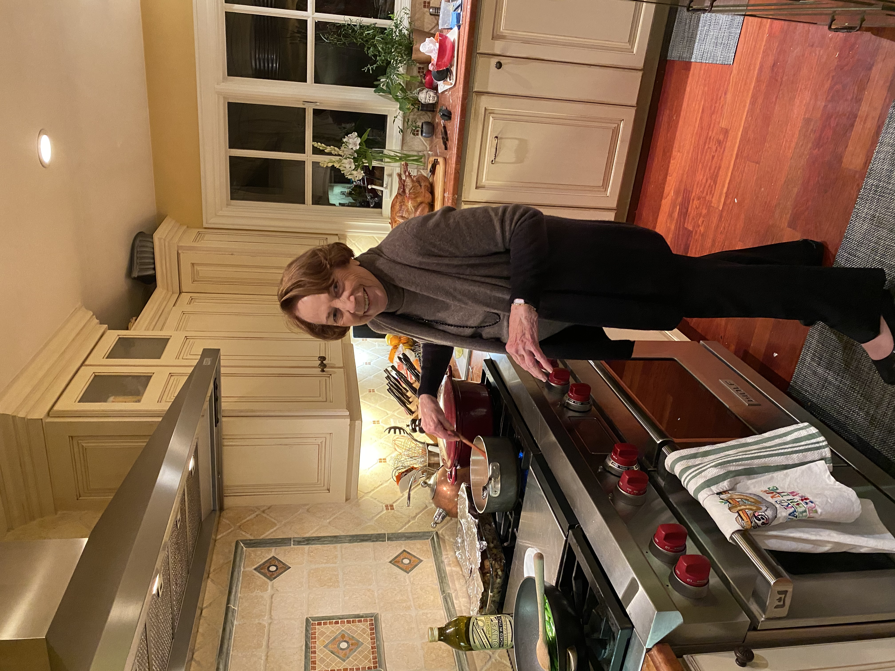

Jojo's Baking Company founder, Alexa Griffin, grew up in the San Francisco Bay Area, where she discovered her love of baking through her grandmother, Joanne, who she calls Jojo. Baking is one of the special bonds Alexa has with her grandmother and she was taught that there is a right way to do things and a wrong way. Alexa always dreamt of owning her own baking company using the recipes she learned from her grandmother. Her grandmother made everything from scratch, she has never seen her use a single cake mix in her life. That is exemplified in the taste of the goods as you get a little bit of home in each bite. That is what Jojos' strive to give everyone, classic flavors and a little bit of home in each bite!
